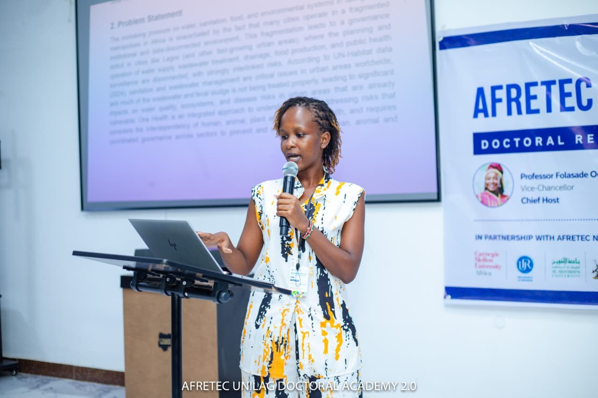

PhD Researcher, University of Lagos
Loise Nduku Kitulu
I’m a Researcher | Spatial planner
Researching water and wastewater solutions…
Hi, I’m Loise Nduku Kitulu
I am an Urban and Regional Planner and PhD researcher at the University of Lagos, passionate about sustainable urbanization, water security and inclusive development across Africa.
Integrating water systems for sustainable urban development
Water and wastewater management
Circular economy
Urban planning and governance
Environmental sustainability
Policy and implementation
Building water-secure, resilient and inclusive cities
Publications and policy briefs
Communities engaged, from KISIP 2 settlements to Nairobi flood studies
Collaborations across Africa and beyond
Research and publications
Masters thesisStormwater Harvesting for Sustainable Rural Water Supply, a Case of Mua Hills Settlement, Machakos CountyJournal articleStormwater harvesting for sustainable rural water supply, Mua Hills settlement, Machakos County, KenyaJournal articleAnalysis of water supply and demand in Machakos TownJournal articleSuitability analysis of stormwater harvesting for rural water supply in the Mua Hills SettlementBook chapterFactors Affecting Stormwater Harvesting in Rural Water Supply, Mua Hills SettlementPolicy briefEnhancing sustainable rural water supply through stormwater harvestingOpinion pieceThirsty Nations, Why Kenya and Nigeria Must Rethink Water Infrastructure NowJournal articleWastewater Infrastructure in Africa, Opportunities and Challenges in the Context of Urban PlanningLet’s connect
Get in touch about research, collaboration, water and sustainable cities.